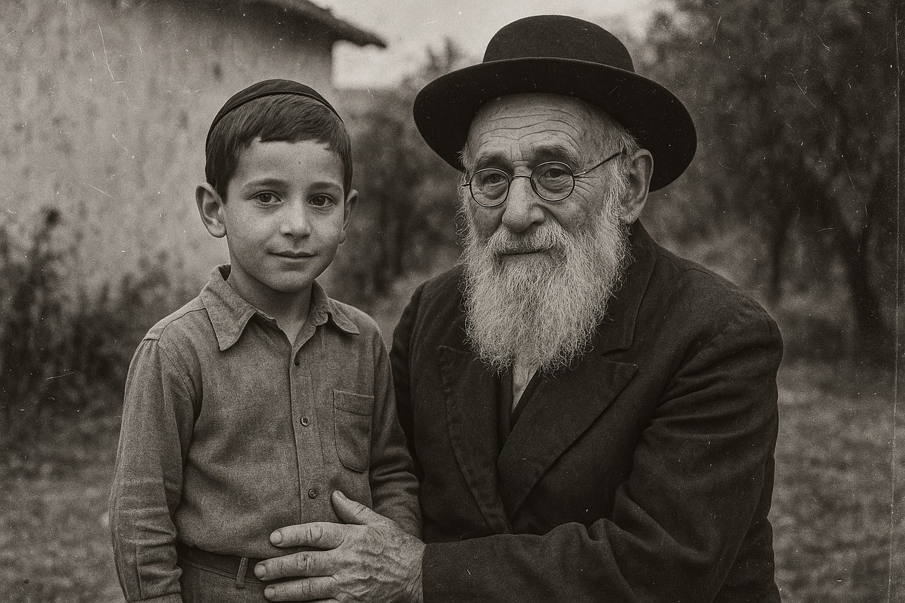

הסיפור המשפחתי שלכם, בסרט או במצגת
קול שהילדים מכירים. תמונה שאף פעם לא שאלנו מה עומד מאחוריה. סיפור שמספרים אצלכם בכל שבת. אנחנו מחברים את החומרים שלכם לסרט שאפשר להקרין באירוע ולשמור במשפחה.
ספרו לנו על האירוע
מצגת ליום הולדת
מאלבום הילדות ועד הנכדים. בוחרים את הרגעים והסיפורים שהמשפחה תשמח לראות יחד.
סרט לבר מצווה או לבת מצווה
סרט סביב חתן או כלת השמחה, עם ההומור של הבית, ברכות קצרות ואנשים שחשובים להם.
סרט מורשת משפחתי
משלבים תמונות, הקלטות ומסמכים כדי לספר על הבית, על הקהילה ועל הדרך שעשתה המשפחה.
איך מתחילים?
ספרו לנו על מי הסרט, מתי תרצו להקרין אותו ומה כבר יש בידיכם. אפשר להתחיל מכמה תמונות והקלטה אחת. נברר איתכם מה מתאים לאירוע ונבנה את הסיפור סביב החומרים שתבחרו.
פנייה לגבי סרט או מצגת